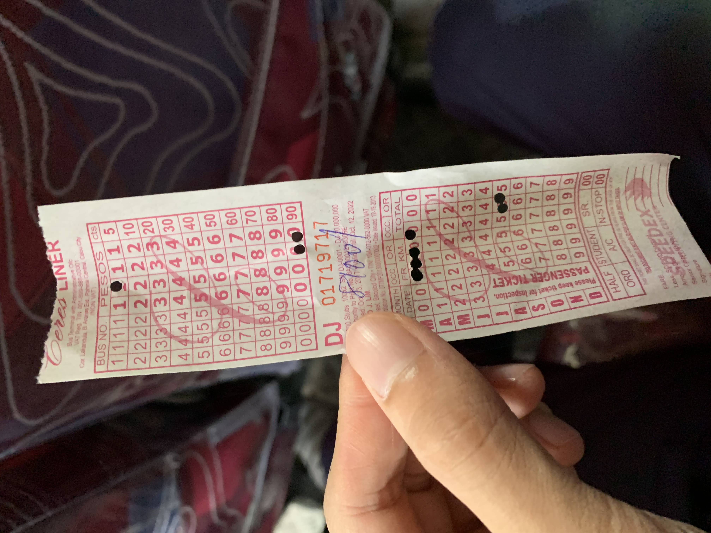
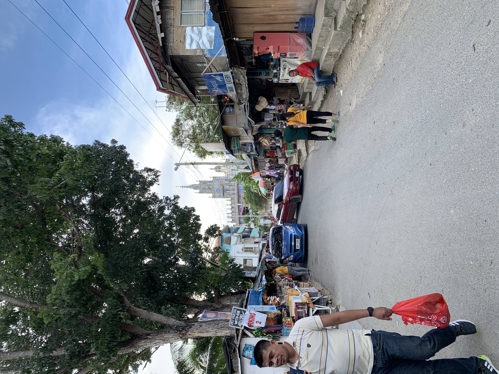
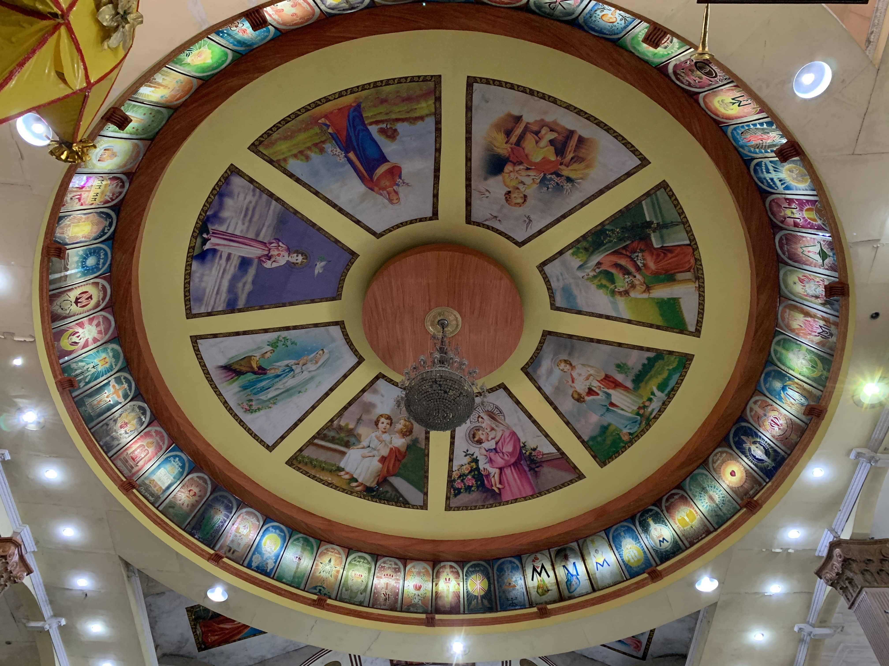

„ÄÄüí¨ : 1393 words| 6 min read.
„ÄÄüëÅ‚Äçüó®Ô∏è :
Page content
I was fortunate enough to visit the Simala Church, the largest church in Cebu. This article mainly records the itinerary planning at that time, the mass participation and the majestic architecture.
Date : 2019.12.15
Foreword
When you come to Cebu, you must have heard of the famous Simala Church, which is actually a monastery known for its castle-like church. Located on a hill in the village of Lindogon in Sibonga. However, this area is far away from the downtown area of Cebu, it is usually not very popular for foreigners. After all, there are many attractions in Cebu, so most of the people who come here are local Filipinos who hold the Catholic faith. Because I’m a atheist, Filipino friend invited me to experience this majestic church and Catholic culture together.
Cebu City➝Simala Church Transportation Options
If you have sufficient funds, I recommended to charter a car directly(private car), which is not only convenient and fast, but also can reach the destination directly. Because my friend is locals, and I prefered to take an in-depth tour, so I choose to take the bus.
By taxi (Grab):
Using Grab app to book a car, it will cost about PHP 2,000 directly from downtown Cebu to Simala Church (depending on the time, you may not be able to get a car on the return journey).
By private vehicle:
In fact, this is what I recommend the most. The method is to buy the itinerary directly on major travel platforms, and hire a driver to guide directly from the designated point to the Simala Church. If you meet a good driver, you can chat with him and experience different cultures and customs. After the end, there is no need to rush or worry about not being able to call a car too late.
By bus:
The most cost-effective itinerary is to experience taking a bus with the locals (very crowded), because the place where the bus arrives is still some distance from the church, so you still need to take a habal habal motorcycle to get there.
Bus + habal habal(motorcycle) detailed information
I chose this way, and the following is the detailed record at that time.
You need to go to Cebu South Bus Terminal to wait for the bus to the church. The destination of the bus is towards Oslob or Liloan, and you need to get off at Simala halfway. The fare is PHP 100 and the travel time takes about two hours.
(It is recommended that whether you are at the station or on the bus, you can directly tell the station administrator or the driver that you are going to Simala Church, ask where to wait for the bus and ask the driver to remind you when to get off.)
Ticket stub, there will be a ticket cutter in charge of punching the ticket on the way. In fact, I don‚Äôt understand the rules of punching.üòÜ

After arriving, because there is still a distance from the church, it is recommended to take a habal-habal (motorcycle) directly to the church. When I arrived, there were quite a lot of motorcycle drivers waiting on the road. The price varies from person to person, about PHP 20 per person , a motorcycle can carry two people.
My friend negotiate the round-trip price with the driver. The advantage is that the price may be lower and the return trip is not afraid of not being able to find the driver. They use WhatsApp to communicate with each other. However, if you want to do this, you must consider your English level, because the countryside in Cebu. People have strong accents, so you may not be able to communicate with them.(or maybe it just my problemüòÇ)
On the way to take the habal-habal, you can experience the primitive countryside at close range, and you can see a lot of sheep on the way. I was really scared and forgot to pick up the camera to record all of this because I didn’t wear a helmet at that time.üòÇ
Simala Church
After two hours of driving, I finally arrived, and I could see the church on the hill in the distance.

After approaching, the first impression is that it is a very long churchüòÇ, unlike the tall churches in Europe, the church in the Philippines are very long. Could it be because this side is also near the earthquake plate, so if you want to build a majestic building, you can’t build it on the top, you have to build it on both sides?
After more than two hours of driving, the first thing I did when I arrived at the church was to go to the toilet. sleeping cat next to toiletü•¥
Frescoes on the ceiling.

Then I participated in the ongoing mass. This was the first time I participated in this kind of religious activity. I felt that everyone who came to participate was very pious. The atmosphere in the church is very solemn. And everyone is using Cebuano during the process, I can say that I can’t understand it at all, so I just follow what everyone does.üòé
After the mass, you can visit the second floor of the church. Take off shoes are required to enter, and no entrance fee. In addition to displaying various types of the Virgin Mary, there are also some historical relics. It also provides believers to worship and fulfill their vows. Many people come here to petition. Many people use small notes to write their wishes, throw them into the petition box and pray. Being a non-religious person is actually a little awkward being here, but I try my best to fit in.
Because it is really a very rich itinerary, we stayed quite long near the church, and it was too late to return to the area waiting for the bus. In addition, there were a bunch of people waiting for the bus, and the bus shift interval was long and there was no obvious shift schedule. At that time, I was really afraid that I might miss the last train.üòÇ
The waiting area for the bus is really primitive. Fortunately, We got on the car in the end, but we had no seat and need to standing on the aisle for the return journey.
Conclusion
I am very happy to have the opportunity to come here. I even did not dare to try to travel alone with my language level at the time. Gorgeous and solemn buildings, rural scenery on the way, this tour is really very pleasant, and it allows me to experience different religions and cultures. Although I studied in a Catholic high school since I was a child, my family has no relevant religiou, I don’t have an in-depth understanding about Catholic, and I have never participated in various activities of the Catholic Church. It was my first time to attend mass in Cebu, and I felt very honored.